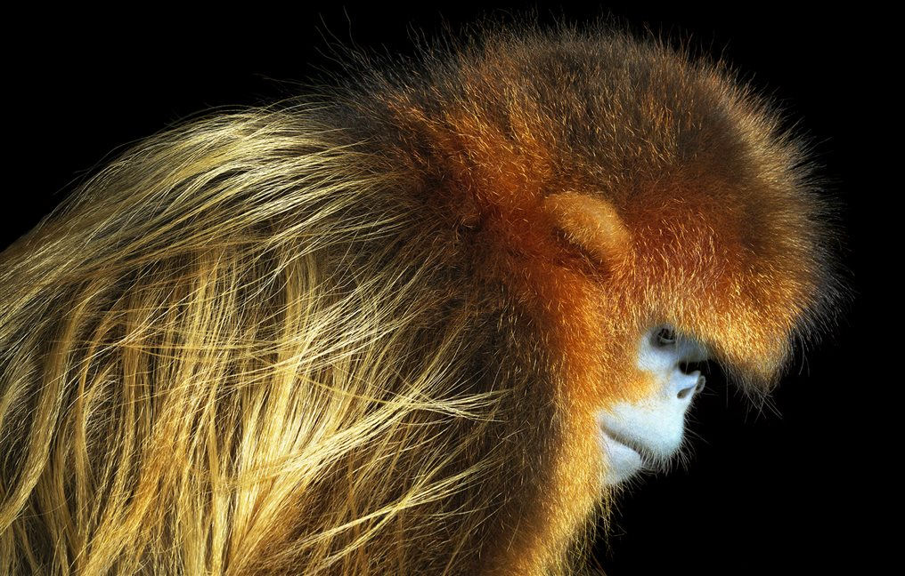
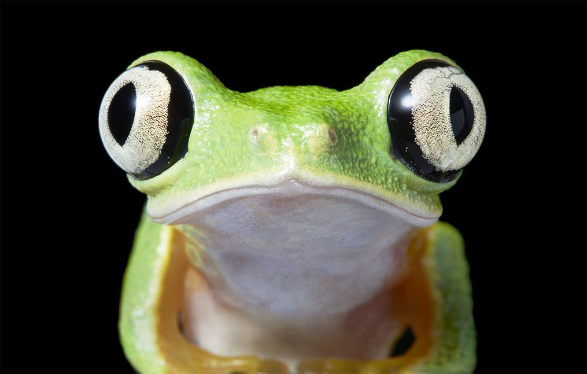
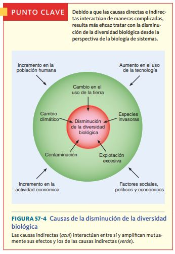

Desde que la vida surgió en la Tierra, la fauna que ha habitado en ella ha cambiado en muchas ocasiones.
Durante sus miles de años de existencia y por diversas razones, se han producido cinco grandes extinciones
de las especies que han poblado la Tierra: son las conocidas como las cinco extinciones masivas. En la
actualidad, y debido a la acción de los seres humanos, el planeta está al borde de los que los científicos
denominan la Sexta Gran Extinción. Pero, ¿es realmente un problema tan grave?
Bienvenidxs a nuestra página dedicada a los animales en extinción, un espacio creado con un objetivo claro: concienciar sobre la urgente necesidad de proteger la rica biodiversidad que compone nuestro planeta.
Conoce a algunos animales en peligro de extinción:
Ajolote
En el axolotl, los aztecas vieron una manifestación del dios Xolotl,
quien llevó a las almas al inframundo junto con el sol poniente. Los aztecas veneraban la carne
del ajolote (como se le puede nombrar) y atrapaban a las criaturas de la enorme red de canales y
lagos que sostenían sus comunidades en el centro de México. Hoy, solo queda una fracción de este
sistema acuático, y está siendo contaminado por los fertilizantes, pesticidas, heces y basura de
la Ciudad de México.
Los axolotls, al igual que sus primos europeos, los olms, son neoténicos, lo que significa que
alcanzan la madurez sexual luciendo como larvas; conservando sus agallas y cola. Esto provoca
que no se desarrollen físicamente, pero se regeneran. El ajolote, como también se le conoce,
hacer crecer las extremidades, los huesos y los órganos que les han sido dañados o cortados. Son
mil veces más resistentes al cáncer que los mamíferos. Si sobreviven a las amenazas modernas el
tiempo suficiente para que comprendamos sus células inmunitarias, podríamos realizar avances
tremendos en numerosas terapias médicas.
Mandril
El estilo lo es todo cuando vives en un grupo tan grande como el de un
mandril. Con una tropa de 1.300 ejemplares una vez registrada en los bosques de Gabón, se cree
que los mandriles forman los grupos sociales más grandes de primates no humanos. Con sus
llamativas caras y ojos, han evolucionado para exhibir la coloración más espectacular de
cualquier especie de mamífero, cuya intensidad indica su estado social y sexual.
Lamentablemente, no es solo su apariencia lo que es atractivo. La carne de mandril se considera
un manjar en el oeste de África, y es parte de un comercio en crecimiento, con toneladas de
carne de animales silvestres introducidas de contrabando en el oeste de Europa a diario. Debido
a que los mandriles viven en grupos tan grandes, gran parte de su población puede caer en el
comercio en auge en una sola cacería. La tala y la agricultura también están limitando sus
lugares de refugio, por lo que estos notables animales necesitan urgentemente una protección más
eficaz.

Mono dorado de nariz chata
Localizado a lo largo de las montañas del centro de China, el mono
dorado de nariz chata soporta algunos de los inviernos más duros de cualquier primate no humano
puede soportar. Su capa de pelo larga y suave lo protege de los vientos helados mientras que su
rostro desnudo soporta la mayor parte del frío. Ha sido cazado durante mucho tiempo por su
hermoso pelaje, pero desde principios de la década de 1990, la caza furtiva se ha reducido
gracias a una mayor protección del gobierno. No obstante, su número ha seguido disminuyendo a
medida que se despejaron sus bosques para la obtención de madera y la creación de tierras de
cultivo. Además, el turismo se ha expandido al amparo del crecimiento económico de China, y las
manadas de monos se han visto fuertemente hostigadas y perseguidas para ser vistas. Tan solo
alrededor de 120 ejemplares de esta especie sobreviven en la actualidad en estado salvaje.
Lémures
Solo queda el 10% de los bosques históricos de Madagascar, los cuales
sustentan a estos lémures en peligro crítico. Con una gran pasión por el néctar, se cree que los
lémures son los polinizadores más grandes del mundo. A diferencia de la mayoría de los primates,
dan a luz a grandes camadas, por lo que prosperan en cautiverio, donde las tasas de
supervivencia son altas. Pero debido a que han sido criados a partir de un grupo genético muy
pequeño, las reintroducciones posteriores entrañan muchas complicaciones. Su conservación se
logrará cuando simplemente los dejemos en paz en un dosel de selva virgen.

Anfibios en peligro de extinción
El clima cambiante también está fomentando la propagación de un hongo
mortal conocido como el hongo quítrido de los anfibios. Los bosques de tierras bajas se vuelven
más cálidos, pero a medida que aumenta la humedad, se forman nubes más gruesas en las montañas y
el hábitat de estas ranas se vuelve mucho más frío. Como las ranas son ectotérmicas -dependen de
fuentes externas para el calor corporal-, su sistema inmunitario se debilita y el hongo quítrido
prospera. La enfermedad resultante, la quitridiomicosis, tiene anfibios afectados en todo el
mundo, infectando y destruyendo más especies de vertebrados que cualquier enfermedad en la
historia registrada. Un tercio de las especies de anfibios ahora están en peligro de extinción;
alrededor de 120 ya se han perdido.
¿Cuándo se considera una especie en peligro de extinción?
Se considera que una especie está en peligro de extinción cuando todos los representantes de la misma corren el
riesgo de desaparecer de la faz de la Tierra. La definición legal de una especie en peligro de extinción, como
lo
estipula la Ley de Especies en Peligro de Extinción de Estados Unidos, es
una especie en peligro inminente de extinción en toda su zona de distribución o en parte importante de ésta. (La
zona de distribución de una especie
es el área donde se encuentra dicha especie). A menos que intervengan los
humanos, es probable que una especie en peligro de extinción desaparezca.
Cuando la extinción es menos inminente pero la población de una
especie particular es demasiado pequeña, dicha especie se clasifi ca como
amenazada. La defi nición legal de especie amenazada de extinción es:
una especie con probabilidad de estar en peligro de extinción en el futuro
inmediato, en toda su zona de distribución o en parte importante de ésta
¿Cuántos animales están en peligro de extinción?
Según datos de la Unión Internacional para la Conservación de la Naturaleza (UICN), el organismo internacional
con mayor potestad sobre el problema, aproximadamente 5.200 especies de animales se encuentran en peligro de
extinción en la actualidad. Además, en un desglose por clase, se encuentran en peligro de extinción el 11% de
las aves, el 20% de los reptiles, el 34% de los peces y 25% de los anfibios y mamíferos.
Causas de que los animales estén en peligro de extinción
Existen múltiples causas por las que una especie puede llegar a encontrarse al borde de la extinción. Las razones
pueden resultar tremendamente particulares para cada especie, pero en líneas generales, entre las mayores
amenazas se encuentra la destrucción y fragmentación de sus hábitats; el cambio climático; la caza y tráfico
ilegal; y la introducción de especies exóticas.
Muchas especies en peligro o amenazadas comparten ciertas características que pueden hacerlas más vulnerables a
la extinción. Algunas de
estas características incluyen tener una zona de distribución extremadamente pequeña (localizada), requerir un
gran territorio, vivir en islas,
tener poco éxito reproductivo, necesitar áreas de reproducción especializadas y poseer hábitos de alimentación
particulares.

Las actividades humanas contribuyen
a la disminución de la diversidad biológica
Las especies se ponen en peligro y se extinguen por varias razones, incluyendo la destrucción o modifi cación de
sus hábitats (es decir, el cambio en el uso de la tierra) y la producción de contaminantes, incluidos
los gases de efecto invernadero que ocasionan el cambio climático. Los
humanos también trastornan el delicado equilibrio de los organismos en
una zona al introducir especies invasoras. La explotación excesiva, como
la sobrepesca es también un factor. Existe una interacción
entre estas causas directas de disminución de la diversidad biológica y factores humanos indirectos como el
incremento de la población humana
Formas de contrarestar la extinción
La conservación in situ es la mejor manerau, que incluye el
establecimiento de parques y reservas, se centra en la preservación de la
diversidad biológica en la naturaleza. Una gran prioridad de la conservación in situ es identifi
car y proteger sitios que alojan una gran cantidad de diversidad. Sin embargo, con las
crecientes demandas de tierra,
la conservación in situ no puede preservar todos los tipos de diversidad
biológica. Algunas veces, sólo la conservación ex situ puede salvar a una
especie
de preservar la diversidad biológica
La conservación ex situ conserva especies individuales en instalaciones controladas por humanos. La crianza de especies en cautiverio en
zoológicos y el almacenamiento de semillas de cultivos vegetales genéticamente diversos son ejemplos de la conservación ex situ.
Aunque la preservación de hábitats es parte importante
de la biología de la conservación, las realidades del
mundo, que incluyen el hecho de que el apetito de tierra por parte de los humanos sigue creciendo, dictan una
variedad de otras medidas de conservación. Algunas veces los científi cos reclaman terrenos sin perturbar y los transforman en zonas con una
gran biodiversidad biológica. La ecología
de la restauración, en la cual los principios
de la ecología se usan para transformar un
ambiente degradado en uno más funcional
y sustentable, forma parte importante de la
conservación in situ.